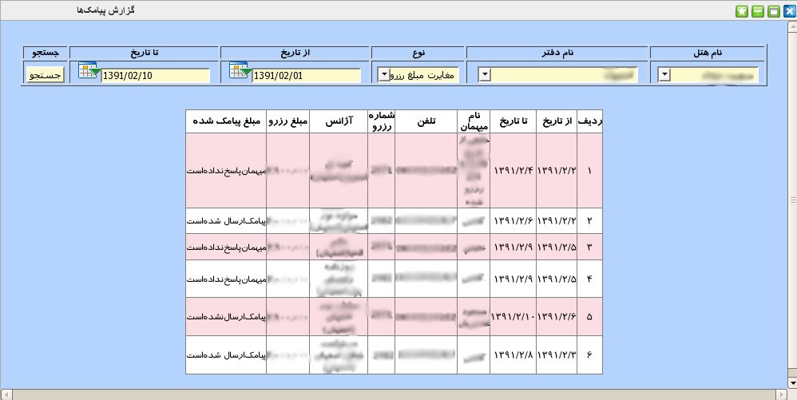
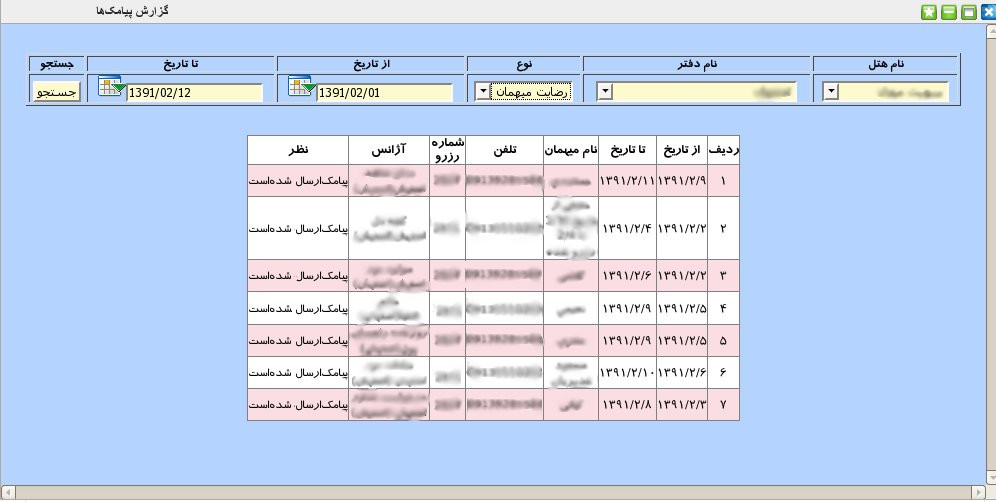

۱-گزارش ارسال پیامک
یکی از امکانات این سامانه, ارسال پیامک به میهمان بوده است. کاربر می تواند با مراجعه به این پنل گزارش کاملی از پیامک های ارسال شده داشته باشد. این گزارش در دو نوع مغایرت مبلغ رزرو و رضایت میهمان ارائه می گردد. برای گزارشگیری ابتدا نام هتل, نام دفتر رزرو گیرنده و نوع گزارشگیری موردنظر را انتخاب نمایید سپس بازه تاریخی مورد نظر را از تقویم های تعبیه شده در کادر مخصوص تاریخ انتخاب نمایید و در انتها بر روی جستجو کلیک نمایید.


جدولی که در این پنل نمایش داده می شود شامل اطلاعات کاملی از تاریخ رزرو, نام میهمان, شماره رزرو و ... می باشد.